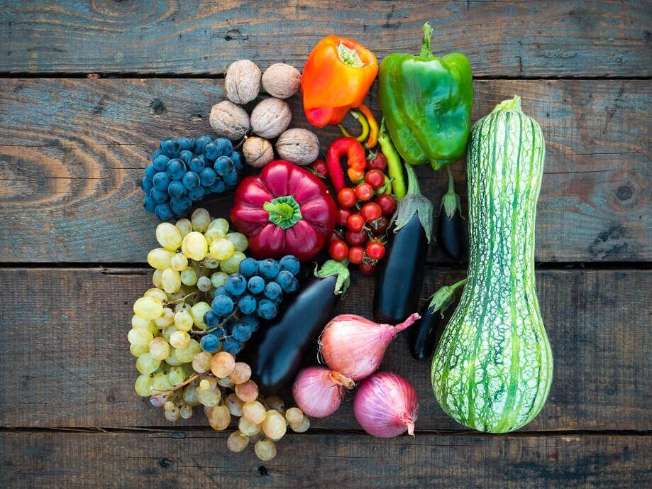

Garden Planner
Below is a list of many fruits and vegetables along with data for each on area size needed to plant, watering needs, days till harvesting and more.

Pădureț, D.-C. (2020, August 21). Photo by Dan-Cristian Pădureț on unsplash. Beautiful Free Images & Pictures. Retrieved June 14, 2022, from https://unsplash.com/photos/mIyZDPhuyY0
Pădureț, D.-C. (2020, August 21). Photo by Dan-Cristian Pădureț on unsplash. Beautiful Free Images & Pictures. Retrieved June 14, 2022, from https://unsplash.com/photos/mIyZDPhuyY0
| Fruit / Vegetable | Days till harvest | Hours Sun light / Day | Soil depth | Water schedule |
|---|---|---|---|---|
| Carrot | 90 | 8 | 24" | Every 7 days |
| Cucumber | 60 | 8 | 12" | Every 5 days |
| Letuce | 120 | 6 | 24" | Every 4 days |
| Onion | 90 | 8 | 12" | Every 7 days |
| Pea | 60 | 6 | 24" | Every 7 days |
| Peppers | 75 | 6 | 10" | Every 4 days |
| Potato | 70 | 8 | 24" | Every 7 days |
| Radish | 45 | 8 | 6" | Every 4 days |
| Spinach | 40 | 8 | 12" | Every 4 days |
| Squash | 55 | 6 | 8" | Every 4 days |
| Tomato | 70 | 8 | 12" | Every 7 days |
| Beets | 85 | 6 | 24" | Every 4 days |